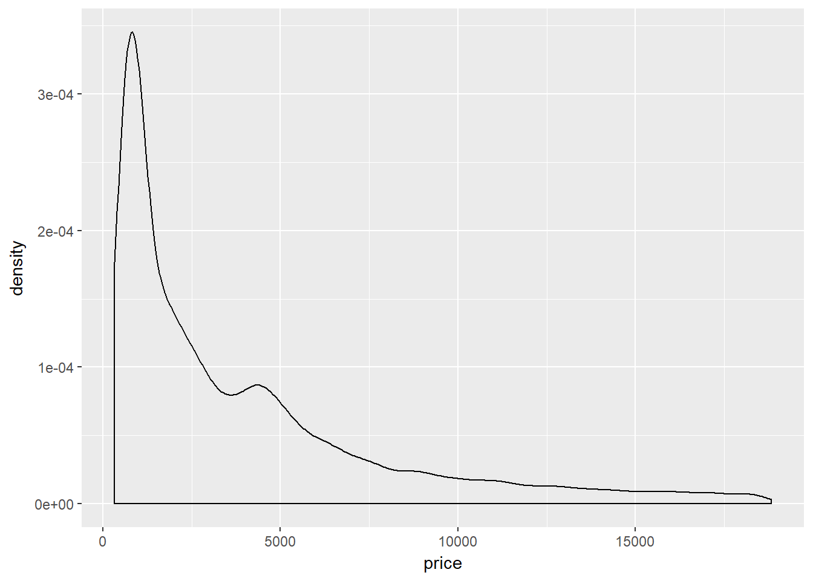
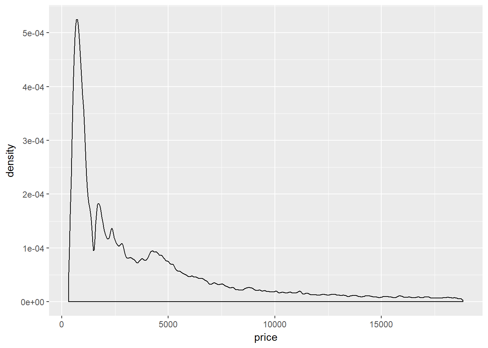
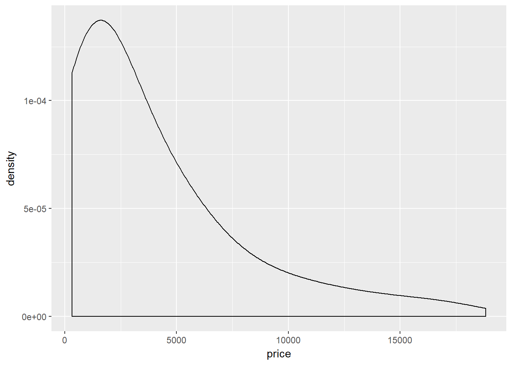
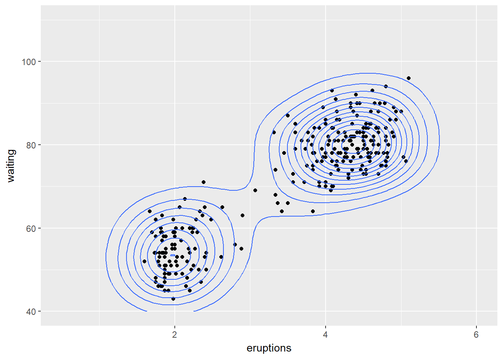

En estadística, un histograma es una representación gráfica de una variable en forma de barras, donde el area de cada barra es proporcional a la frecuencia de los valores representados, ya sea en forma diferencial o acumulada. Sirven para obtener una “primera vista” general, o panorama, de la distribución de los datos, respecto a una característica, cuantitativa y continua. De esta manera ofrece una visión en grupo permitiendo observar una preferencia, o tendencia, por parte de la muestra o población. Un ejemplo de esto se puede ver en la siguiente imagen, con su respectivo código en R para realizarlo mediante el paquete “ggplot2”.
Como un complemento a los gráficos de histograma se pueden realizar gráficas de densidad, donde se calcula una curva de distribución, pudiendo esta ser ajustada a los datos según la exigencia sea necesaria.
ggplot(diamonds, aes(price)) + geom_density() 
He aquí dos ejemplos de cómo puede ser ajustada la curva de distribución de los datos.
ggplot(diamonds, aes(price)) +
geom_density(adjust = 1/5)
#Densidad de la frecuencia de precio ajustado a 5Densidad de la frecuencia de precio ajustado a 5
ggplot(diamonds, aes(price)) +
geom_density(adjust = 5)
geom_density2d## function (mapping = NULL, data = NULL, stat = "density2d", position = "identity",
## ..., lineend = "butt", linejoin = "round", linemitre = 1,
## na.rm = FALSE, show.legend = NA, inherit.aes = TRUE)
## {
## layer(data = data, mapping = mapping, stat = stat, geom = GeomDensity2d,
## position = position, show.legend = show.legend, inherit.aes = inherit.aes,
## params = list(lineend = lineend, linejoin = linejoin,
## linemitre = linemitre, na.rm = na.rm, ...))
## }
## <environment: namespace:ggplot2>Adicionalmente ggplot2 permite realizar estimaciones de densidad en 2 dimensiones lo cual puede ser de utilidad para lidear con el sobre ploteo.
m <- ggplot(faithful, aes(x = eruptions, y = waiting)) +
geom_point() +
xlim(0.5, 6) +
ylim(40, 110)
m + geom_density_2d()